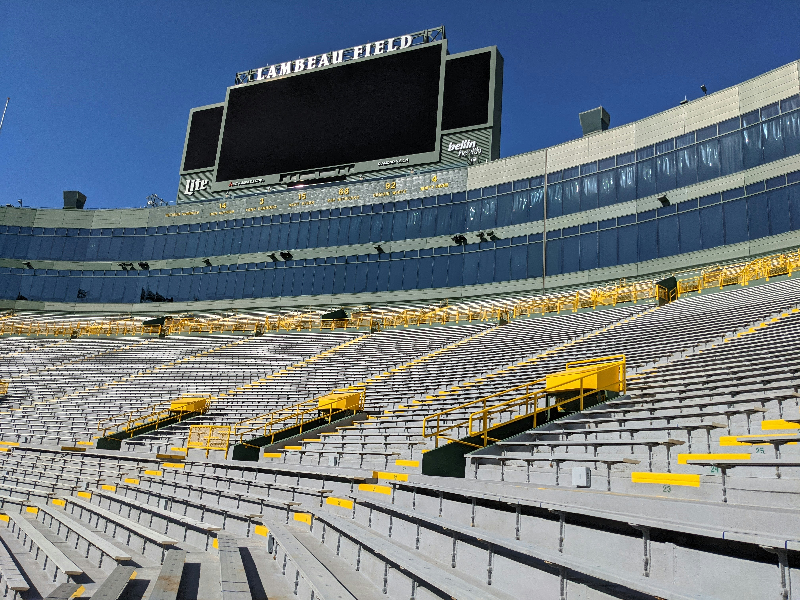

Green Bay is home to several sports teams, with the most famous being the Green Bay Packers, a professional football team that competes in the National Football League (NFL). The Packers have a rich history and are known for their passionate fan base, often referred to as "Cheeseheads."
In addition to the Packers for Football in Green Bay, The Green Bay Blizzard are an arena football team that plays in the Indoor Football League.
Green Bay is also home to the Green Bay Gamblers, a junior ice hockey team that competes in the United States Hockey League (USHL). The Gamblers have a strong following and have produced several players who have gone on to play in the National Hockey League (NHL).
Green Bay is also home to the University of Wisconsin-Green Bay Phoenix and their athletic programs.
Green Bay also has a summer college wood bat baseball team called the Green Bay Rockers, which provides entertainment for baseball fans in the area.
Also in the area, Green Bay and the surrounding area has several high schools public, private, and charter schools that offer various sports programs.
The city also supports various youth and amateur sports leagues, including soccer, basketball, and hockey and more.
The Green Bay Packers are one of the most successful and storied franchises in NFL history. Founded in 1919, the team has won multiple league championships, including four Super Bowl titles. The Packers play their home games at Lambeau Field, which is known for its iconic "Lambeau Leap" celebration and passionate fan base.
The Packers are unique in that they are publicly owned by their fans, making them the only community-owned team in the NFL. The team's colors are green and gold. The Packers have a strong rivalry with the Chicago Bears, which is one of the oldest and most storied rivalries in professional football and all of sports.
The Packers have a rich history of legendary players, including Bart Starr, Brett Favre, and Aaron Rodgers. The team has a dedicated fan base that spans generations, and attending a Packers game at Lambeau Field is considered a bucket-list experience for football fans.
The Green Bay Blizzard is an indoor football team that competes in the Indoor Football League (IFL). The team was founded in 2003 and has been a staple of the Green Bay sports scene ever since. The Blizzard plays its home games at the Resch Center, which provides an exciting and intimate setting for fans to enjoy the fast-paced action of indoor football.
The Green Bay Gamblers are a junior ice hockey team that competes in the United States Hockey League (USHL). The team was founded in 1994 and has since become a prominent part of the Green Bay sports community. The Gamblers play their home games at the Resch Center, where fans can enjoy high-level hockey action and support the development of young players aspiring to reach the professional ranks.
The University of Wisconsin-Green Bay (UWGB) Phoenix is the athletic program of the university, competing in NCAA Division I sports. The Phoenix offers a variety of men's and women's sports teams, including basketball, soccer, volleyball, and more. The teams compete in the Horizon League and have a strong presence in the local sports community.
The Green Bay Rockers are a summer collegiate baseball team that provides entertainment for baseball fans in the area. The team plays in the Northwoods League, which is a collegiate summer baseball league that features top college players from across the country. The Rockers play their home games at Capital Credit Union Park, where fans can enjoy exciting baseball action and support the development of young players.